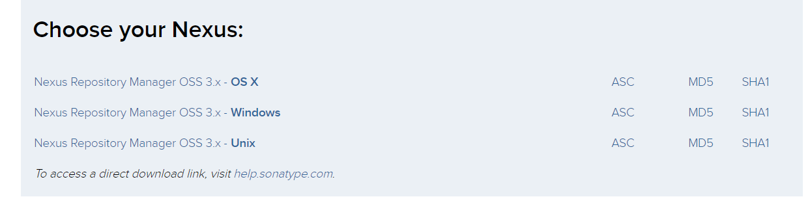

Nexus历史
2005年12月，Tamas Cservenak由于受不了匈牙利电信ADSL的低速度，开始着手开发Proximity——一个很简单的Web应用。它可以代理并缓存Maven构件，当Maven需要下载构件的时候，就不需要反复依赖于ADSL。到2007年，Sonatype邀请Tamas参与创建一个更酷的Maven仓库管理软件，这就是后来的Nexus。 —— 引用自《Maven实战》许晓斌
如今Nexus3已经可以管理下列构件了：
- java jar （Maven）
- docker image （Docker）
- yum （Centos）
- bower （Nodejs）
- npm (Nodejs）
- nuget (.Net)
- pypl （Python）
- rubygems （Ruby）
- gitlfs （Git）
为什么要使用Nexus？
节省外网带宽。
大量对于外部仓库的重复请求会消耗带宽，利用私服代理外部仓库，可以消除对外的重复构件下载，降低带宽的压力。
加速Maven构建。
不停地连接请求外部仓库十分的耗时，Maven在执行构建的时候不停地检查远程仓库的数据。利用私服，Maven只检查局域网的数据，提高构建的速度。
部署第三方构件。
当某个构件无法从任何一个外部远程仓库获得。建立私服之后，便可以将这些构件部署到私服，供内部的Maven项目使用。
提高稳定性，增强控制。
Maven构建高度依赖于远程仓库，因此，当网络不稳定的时候，Maven构建也会变得不稳定，甚至无法构建。私服缓存了大量构建，即使暂时没有网络，Maven也可以正常的运行。
降低中央仓库的负荷。
使用私服可以避免很多对中央仓库的重复下载，降低中央仓库的压力。
Nexus搭建教程
下载Nexus
在Sonatype的官网可以下载到Nexus
https://www.sonatype.com/download-oss-sonatype

选择你系统下的版本下载。
安装Nexus
windows版本下载到的是.zip文件，unix版本下载到的是.tar.gz版本
解压后都能得到两个目录：
nexus-3.xx.xx包含Nexus的启动所需文件，如启动脚本、依赖包等sonatype-work包含Nexus配置文件、日志文件、仓库文件等
在nexus-3.xx.xx/bin目录下会有一份nexus.vmoptions文件，可以对其配置
1 | -Xms1200M |
Nexus默认使用Jetty启动，端口号默认是8081，如果想要修改的话，可以修改文件nexus-default.properties
1 | application-port=8081 |
windows下启动
1 | D:\nexus\nexus-3.xx.xx\bin> .\nexus /start |
nexus.exe可以执行
start后台启动stop停止run前台启动（占着控制台，按Ctrl+C可以停止）restart重启status查看状态
Linux下启动
1 | tar -zxvf nexus-3.xx.xx -C /opt/nexus |
如果你用root用户启动会报一个警告
1 | WARNING: ************************************************************ |
Nexus不推荐你使用root用户启动，所以最好是新建一个linux用户来运行Nexus
1 | sudo adduser nexus |
或者强制使用root用户启动，修改bin/nexus.rc文件
1 | run_as_user="root" |
Docker启动Nexus
docker下启动Nexus简单到爆，一句话就搞定了
1 | docker run -d -p 8081:8081 --name nexus \ |
使用Nexus
成功启动之后，可以打开http://<ip>:8081访问nexus管理页，短暂初始化之后会出现如下界面
点左上角的的sign in 可以登录，默认的admin账户密码为admin123，最高权限的管理者
nexus的仓库类型
可以看到列表中出现了三种type
hosted私有仓库，用于存储个人提交的构件proxy代理仓库，用于代理远程镜像源的，比如默认存在的maven-central，指向了Maven中央仓库group组仓库，本身不储存构件，用于组合其它仓库
当maven的仓库源配置为组仓库地址时，将会在组仓库配置的所有仓库中搜索构件。
新建仓库
点选Create repository之后选择仓库构件的类型，这里以maven2(hosted)为例
需要填仓库的名称Name
下面有几个可以改的地方：
- Maven2 Version policy 版本策略，可以选择是否只提交release构件或者snapshot
- Hosted Deployment policy 发布策略， 可以选择是否可以覆盖提交构件或者只读